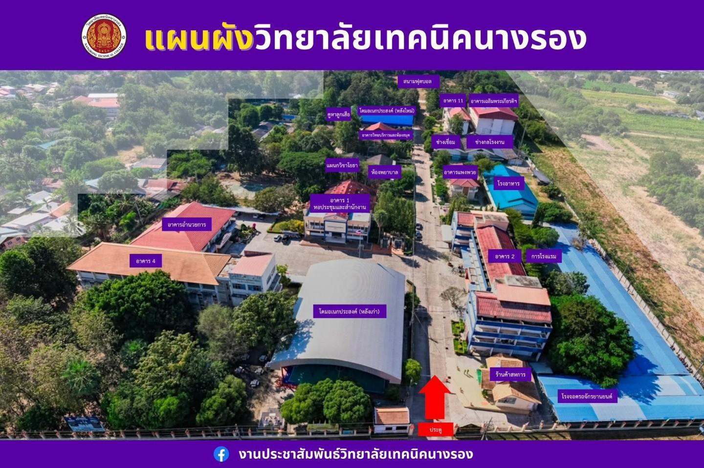

CAMPUS DIRECTORY & MAP
แผนผังและจุดสำคัญภายในวิทยาลัย
คลิกที่รายชื่ออาคารด้านซ้าย หรือกดที่หมุดหมายเลขบนแผนที่เพื่อดูรายละเอียด

คลิกที่รายชื่ออาคารด้านซ้าย หรือกดที่หมุดหมายเลขบนแผนที่เพื่อดูรายละเอียด
